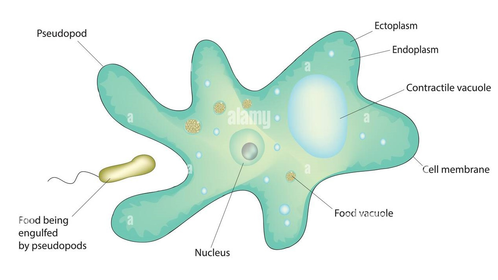
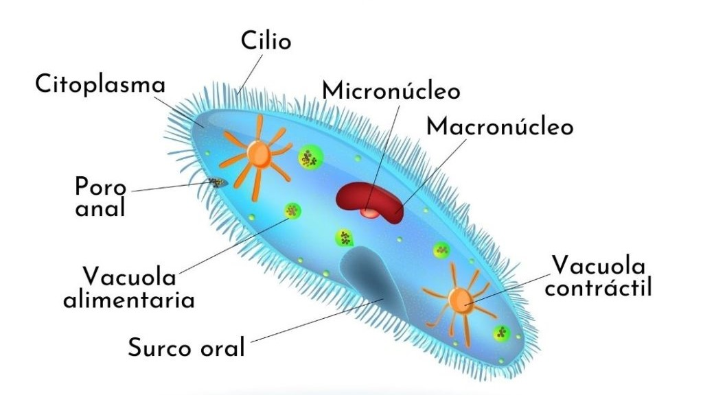
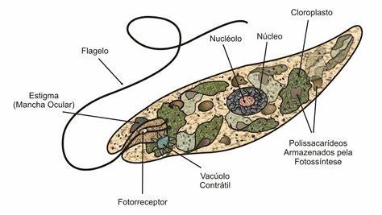
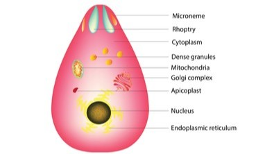
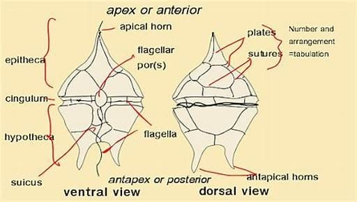

Historia del Reino Prostita
.jpg)
Características
- Asexual: La mayoría de los protistas se reproducen de forma asexual a través de la fisión binaria, un proceso en el cual una célula se divide en dos células hijas idénticas. Otros mecanismos asexuales incluyen la gemación (formación de un brote o protuberancia) y la esporulación, en la que se generan esporas que pueden desarrollarse en nuevos organismos.
- Sexual: Algunos protistas pueden reproducirse sexualmente mediante la fusión de gametos en un proceso llamado singamia. Este proceso permite la recombinación genética, lo que aumenta la variabilidad entre las especies y mejora la adaptación a su entorno.
- Autótrofos: Los protistas autótrofos, como las algas, pueden realizar fotosíntesis. Utilizan cloroplastos para capturar la energía del sol y convertirla en nutrientes, lo que les permite producir su propio alimento de forma similar a las plantas.
- Heterótrofos: Otros protistas, como las amebas, son heterótrofos y dependen de la ingestión de otros organismos o materia orgánica. Este proceso, conocido como fagocitosis, les permite envolver y digerir su alimento dentro de vacuolas.
- Mixótrofos: Algunos protistas, como la Euglena, pueden alternar entre la fotosíntesis y la heterotrofia, dependiendo de las condiciones ambientales. Cuando hay luz, realizan fotosíntesis, y en ausencia de luz, pueden ingerir materia orgánica para obtener nutrientes.
- Medios acuáticos: Viven en agua dulce, como estanques y lagos, o en agua salada, como mares y océanos. Algunas especies forman parte del fitoplancton marino, que es esencial para la cadena alimentaria acuática.
- Ambientes húmedos: Algunos protistas pueden habitar en suelos húmedos, musgos o en otras superficies que retienen humedad.
- Parásitos: Otros protistas viven como parásitos en organismos vivos. Un ejemplo es el Plasmodium, que causa la malaria y requiere de dos huéspedes, el mosquito y el ser humano, para completar su ciclo de vida.
Reproducción: Los protistas muestran diversos mecanismos de reproducción, tanto asexual como sexual:
Alimentación: Los protistas tienen métodos diversos de obtener nutrientes, que dependen de su tipo y del entorno en el que se encuentran:
Hábitat: Los protistas se encuentran principalmente en ambientes acuáticos, aunque también pueden habitar otros entornos:
Ejemplos
- Amebas (Amoeba proteus): Son organismos unicelulares que se mueven y capturan su alimento mediante seudópodos (extensiones temporales de su citoplasma).
- Paramecios (Paramecium): Son protistas unicelulares cubiertos de cilios, los cuales usan para moverse y alimentarse.
- Euglena (Euglena gracilis): Es un organismo unicelular que puede realizar fotosíntesis como las plantas, pero también puede ingerir alimento si no hay luz.
- Algas verdes (Chlamydomonas, Volvox): Estas algas pueden ser unicelulares o formar colonias. Realizan fotosíntesis y viven en medios acuáticos.
- Plasmodio (Plasmodium falciparum): Es un parásito responsable de la malaria en humanos, que requiere dos hospederos (mosquito y humano) para completar su ciclo de vida.
- Dinoflagelados (Ceratium): Son protistas marinos que pueden realizar fotosíntesis. Algunos son bioluminiscentes y pueden causar mareas rojas, fenómenos tóxicos en el mar.

Amebas

Paramecios

Euglena

Algas verdes

Plasmodio

Dinoflagelados